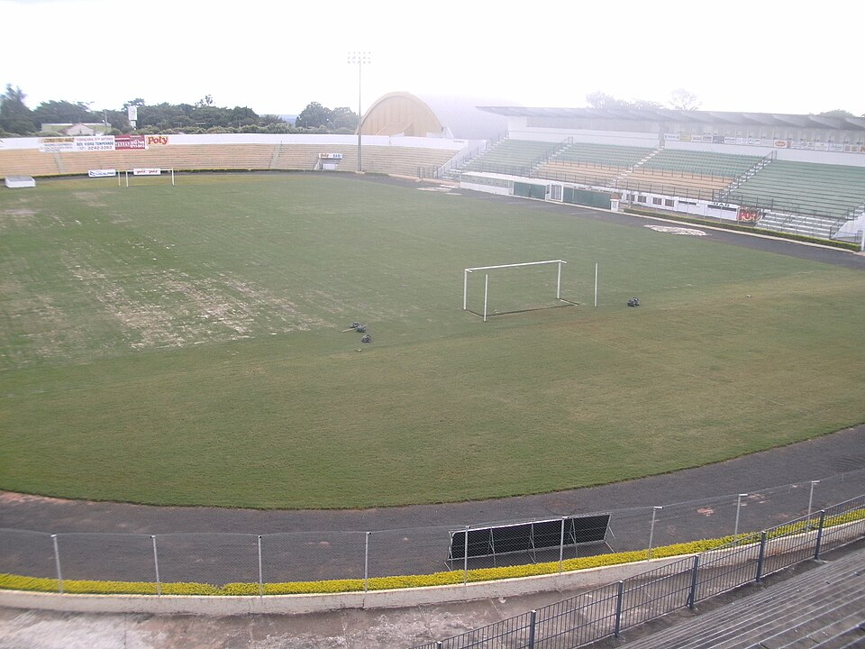

Mirassol Futebol Clube
Fundado em 9 de novembro de 1925, o Mirassol passou suas primeiras décadas disputando torneios amadores locais até, a partir dos anos 1960, ingressar com estabilidade no profissionalismo ao participar de divisões do Campeonato Paulista, tendo chegado a atuar como Mirassol Atlético Clube entre 1964 e 1981 com a fusão com antigo rival Grêmio Recreação, Esporte e Cultura (GREC). Em 1997 foi campeão da Série A3 do Paulista.
Entre o fim dos anos 2000 e o início dos anos 2010, com o acesso inédito à elite estadual em 2008, o Mirassol tornou-se presente na Série D do Campeonato Brasileiro, do qual subiu para a Série C em 2021 com um título. Da terceira divisão foi à segunda em 2023, também obtendo um título, e em 2024 garantiu o acesso à elite nacional, conquistando logo no primeiro ano uma participação inédita na Copa Libertadores da América.[
Participações Recentes
Depois de, em 2023, terminar a Série B na sexta colocação, com 63 pontos, o Mirassol conquistou o inédito acesso à elite do futebol brasileiro na edição seguinte como vice-campeão, com 67, estando a um ponto do campeão Santos.[11] O clube foi o de cidade com menor população do Brasil, com 65 mil habitantes, a disputar a Série A quarenta anos após a Catuense, de Catu, na Bahia, que possuía 39,4 mil em 1984.Depois de, em 2023, terminar a Série B na sexta colocação, com 63 pontos,[20] o Mirassol conquistou o inédito acesso à elite do futebol brasileiro na edição seguinte como vice-campeão, com 67, estando a um ponto do campeão Santos. O clube foi o de cidade com menor população do Brasil, com 65 mil habitantes, a disputar a Série A quarenta anos após a Catuense, de Catu, na Bahia, que possuía 39,4 mil em 1984.
Na Série A, o Mirassol, comemorando seu centenário, conquistou uma vaga na fase de grupos da Copa Libertadores da América por ter terminado em quarto lugar na tabela, com 67 pontos. Outro destaque da campanha foi a sexta invencibilidade em casa desde a implementação dos pontos corridos em 2003, repetindo os feitos do Atlético Mineiro em 2012, Grêmio em 2009, do Fortaleza em 2024 e Flamengo em 2019 e 2025.
Mascote
O mascote do clube é o leão. O felino é um dos mais comuns entre os clubes brasileiros de futebol por ser frequentemente associado à coragem, força e lealdade desde os primórdios da civilização humana, sendo visto como uma figura imponente que as equipes buscam ser representadas, e, por isso, se tornou o mascote do Mirassol. É utilizado pelo clube como uma forma de entretenimento para os torcedores no estádio e para atividades interativas em eventos que envolvem a população local. Em 2025 o mascote ganhou uma versão feminina para representar as mulheres, que vinham marcando grande presença no Maião.
Estádio

O Mirassol disputa partidas como mandante no Estádio Municipal José Maria de Campos Maia, popularmente conhecido como Maião, cujo nome homenageia o prefeito de Mirassol no período de sua construção, tendo sido inaugurado pela prefeitura em 3 de março de 1983 com uma vitória do time por 2-1 sobre o Jalesense. Utilizado pelas categorias profissionais e de base e "considerado um dos mais modernos [...] do Brasil" segundo o portal GE, o centro de treinamento do clube, localizado em um terreno na cidade adquirido em 2017 e inaugurado em 2019, foi construído com parte do percentual da venda do atacante Luiz Araújo, formado no Mirassol, do São Paulo para o Lille, da França.